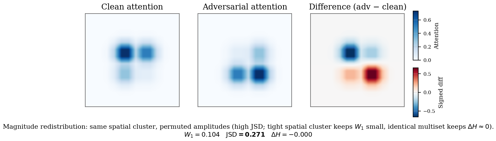

Research tool · live
ViTViz
Upload an image, pick a Vision Transformer, and watch its attention move while an adversarial attack runs. Attention rollout plus per-layer and per-head views, five attack methods — FGSM, PGD, MIM, TGR, SAGA — shown iteration by iteration, across six pretrained architectures or your own weights.
Adversarial fragility convinces people far more when they make a model fail on their own photo than when I describe it on a slide.
Open the Space ↗